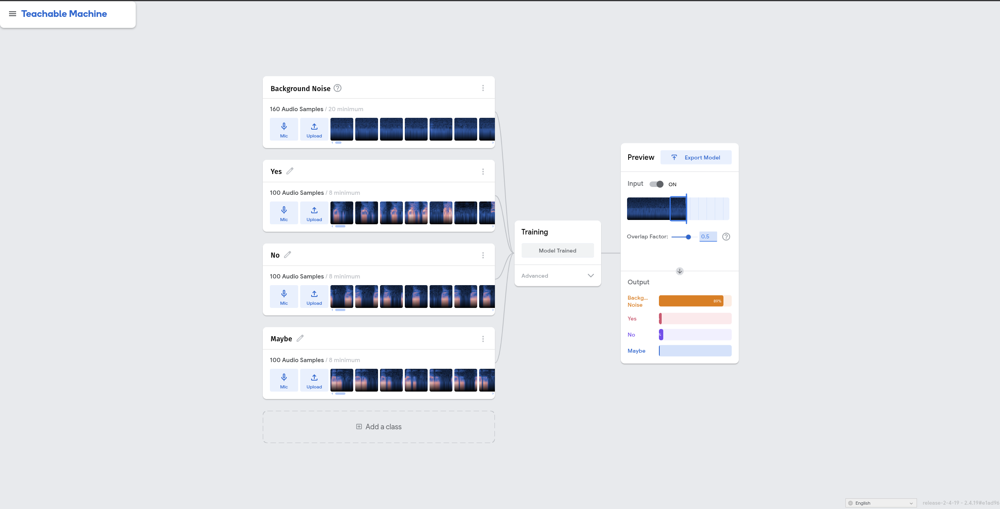

Project Objective & Scope
Objective: Create an audio classification algorithm using Google's Teachable Machine, and reflect on Joy Buolamwini's Unmasking AI alongside our machine learning experiment.
- Classification Topic: Vocal Sounds
- Sound Classes: Background Noise, "Yes", "No", "Maybe"
- Audio Samples: Over 300 original sound samples

Process
To create our audio dataset, our three person team collected 300 original sound samples across three spoken classes ("Yes", "No", and "Maybe") divided evenly. We also had to include a continuous class for "Background Noise." Google's Teachable Machine requires audio training data to be split 1-second intervals, so each group member recorded at around 34 samples per word within a Teachable Machine audio project and exported their class recordings as .zip files to merge into our main model.
During data collection, we varied our vocal delivery by giving different tones and pitches. We also made sure to include a diverse group of people so we can train our model on a variety of voices.
Some possible issues include participants not being able to keep a consistent cadence throughout their recording. This could lead to one sample having the word cut off mid sample or another sample containing little to no audio data. As we collected more data, we tried to use the visual cues that Teachable Machines gives to pace participants. Another potential issue we tried to account for was the fact that most of the data would be collected in different types of rooms. We tried our best to keep the room silent, but factors like design could make some audio echo more than others.
Try the Model
Allow microphone access in your browser to test our audio model below:
Project Code & Data
- GitHub Repository: View Source Code on GitHub
- Original Audio Data: Access Our 300 Original Sound Samples
- Teachable Machine Model Link: View Hosted Model
Try it yourself
- Allow microphone access and say "Yes" clearly.
- Now try "No," then "Maybe." Does it keep them apart?
- Stay silent, or make a sound it was never trained on, like a cough or clap. Does it say Background Noise?
- Change your pitch, speed, or distance from the mic and watch how the predictions change.
Algorithm at Work
Project Statements
For our group project, we have developed an audio classification model using Google’s Teachable Machine. The goal is to train the model to recognize four different sound classes: “Yes”, “No”, “Maybe”, and background noise. Each group member is responsible for contributing 100 original audio samples, which we used to train the model. Although recognizing three simple words seems like a straightforward task, Joy Buolamwini’s Unmasking AI: My Mission to Protect What Is Human in a World of Machines prompts one to think much more critically about the process. Exploring machine learning hands on shows that the model can not independently decide what a word sounds like or what it means. Its understanding is shaped by the samples, categories, and decisions we make throughout training. Exploring the choices made when training models shows how easily human assumptions can become part of a technological system that presents itself as objective.
In the introduction, Buolamwini describes building her Aspire Mirror at MIT. The facial detection software had failed to recognize her face unless she had on a white mask. The software’s ability to work under some conditions leads to a concealment of its limitations for certain users. The author ran into this issue while developing something intended to be creative and interactive, rather than a technology with serious consequences, but it still poses as an eye opener for machine learning. A system can easily appear to be functional because it works for the people creating it. That led to questioning what we should consider a successful outcome of our own machine learning. Keeping the book in mind, we can recall that if the model correctly identifies the words we have trained it to recognize, that does not necessarily mean that it has learned to recognize them reliably. We can also consider the conditions under which it produces those predictions and whether our testing gives us an opportunity to recognize its possible mistakes. This idea connects to Chapter 10, “Arbiter of Truth,” where Buolamwini examines the idea of “ground truth” in machine learning. She explains that the categories that are used to train a model are not independent truths discovered by a computer. They are determined by the people developing this system. It was interesting to see this idea play out in the process of training our model. Our model is restricted to the categories we decide to give it, meaning it cannot account for everything that falls outside of them. This demonstrates Buolamwini’s argument that classification systems reflect human decisions about how to represent the world.
Being the ones to teach the machine to identify our three categories (“yes”, “no”, and “maybe”), we identified a limitation, our dataset was going to come from a small set of people. However, each person has a specific vocal range, pitch, english background, and accent, leading to a model that would likely recognize similar voices well, but potentially struggle with anyone whose speech differs from ours or our peers. This brought us back to a term from Buolamwini’s introduction, called the “coded gaze”, the way in which the priorities, preferences, and prejudices of those in power shape technology outcomes. Although we are not intentionally encoding our machine to only identify a certain group of people, the data we used to train it only captures a limited amount of diversity. Buolamwini’s Gender Shades research showed that commercial gender classification systems performed far worse on darker-skinned women than on lighter-skinned men, and she traced much of that gap back to the datasets the systems were trained on, which were largely composed of lighter-skinned, male faces. Companies were able to report overall high accuracy rates while hiding the higher error rates among darker-skinned women. This made us think about how we were going to evaluate our teachable machine. If we were to test this on ourselves or our peers, our accuracy rate would look great. However, using that metric is misleading because it would ignore possible failures among different groups of people. This research taught us that data is not neutral, it is an outcome of who has the power to be included and what gets collected. This is important because when these decisions are unaudited they present themselves as gaps and inequalities within a system. In real world applications, these machines can present themselves as objective, when really we are swapping out flawed human decisions for unjust algorithmic decisions.
Joy Buolamwini also made us think about the human side of data collection. Our training data is made of real voices from us and our peers. Buolamwini introduces the importance of making it clear to people how what they contribute will be used. In our project, this meant being thoughtful when asking our peers to contribute recordings. We made sure to explain what the samples are for, kept them within the project, and made sure not treat their voices as raw material to be used however we like. It’s a small-scale version of the consent question that Buolamwini raises about the massive datasets scraped from the internet.
A part of the book that was also important to keep in mind was Chapter 4, “Shield Ready,” where Buolamwini describes using demonstrations to ensure that algorithmic failures are visible to others. She describes her approach that was not fully reliant on technical explanations as an “evocative audit.” This demonstrated the point that understanding algorithmic bias does not always require an extensive technical background. This is why it is important for our website to contain a “Try the Model” section. It allows visitors to interact with our model. It would be valuable to document instances where the model confuses or produces unexpected predictions.
In Chapter 21, “Costs of Inclusion and Exclusion,” Buolamwini discusses auditing Olay’s Skin Advisor and she shows the importance of being willing to change or discontinue a system when serious problems arise. This challenges the idea that if something successful is created, it means making it work at all costs. The author shows that not every limitation can be fixed with another technical adjustment. For our project, this means accepting that our model may have limitations we cannot fully address within the scope of the project. Rather than concealing those limitations, we can treat them as part of the learning experience. The purpose of training the model should not only be to have it make accurate predictions, but also to understand the intersection between human decisions and technical boundaries that influence those predictions.